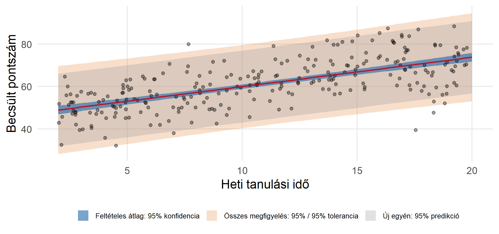
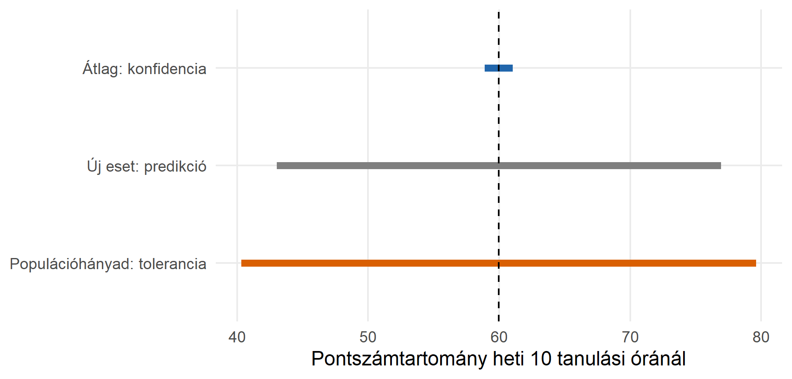

Statisztika 2. előadás
Konstanssal illesztett OLS esetén:
\[ \begin{align} SST&=\sum_{i=1}^n(Y_i-\bar Y)^2=SSR+SSH \\ SSR&=\sum_{i=1}^n(\widehat Y_i-\bar Y)^2 \\ SSH&=\sum_{i=1}^n(Y_i-\widehat Y_i)^2=\sum_{i=1}^ne_i^2 \end{align} \]
Azt fejezi ki, hogy a magyarázó változó(k) a függő változó varianciájának (a kimeneti változékonyságnak) hányadrészét magyarázza(k)?
\[ R^2=\frac{SSR}{SST}=1-\frac{SSH}{SST} \]
Egyváltozós regresszió esetében \(R^2=r^2\)
A magas \(R^2\) sem jelent okságot!
Ha \(k\) prediktoregyüttható van a konstans mellett:
\[SE(e)=\sqrt{\frac{SSH}{n-r-1}},\] \[R^2_{\mathrm{adj}}=1-\frac{SSH/(n-r-1)}{SST/(n-1)}\]
Feltevések:
Klasszikus egyszerű OLS esetén:
\[SE(b_1)=\frac{SE(e)}{\sqrt{\sum_{i=1}^n(X_i-\bar X)^2}}.\]
A bizonytalanság rendszerint kisebb, ha több információ áll rendelkezésre: nagyobb minta és nagyobb \(X\)-szóródás; nagyobb hibaszórás viszont növeli.
\[b_1\pm t_{1-\alpha/2,n-2}\,SE(b_1).\]
A 95%-os konfidenciaintervallum módszere ismételt mintavételnél 95%-os lefedettséget céloz.
\[H_0:\beta_1=0,\qquad H_1:\beta_1\ne0,\] \[t=\frac{b_1-0}{SE(b_1)},\qquad df=n-2.\]
Többváltozós regressziónál:
\[H_0:\beta_1=\dots=\beta_k=0\] \[H_1: \exists i: \beta_i \ne0\] \[F=\frac{SSR/r}{SSH/(n-r-1)},\qquad df_1=r,\;df_2=n-r-1\] Egyszerű regresszióban az \(F\) és \(t\)-próba ugyanazt az eredményt adja. Többváltozósnál a szignifikáns összmodell nem jelenti, hogy minden prediktor egyenként szignifikáns.
| Intervallum | Mire vonatkozik? |
|---|---|
| A feltételes átlag konfidenciaintervalluma | Az adott \(X\)-nél lévő populációs átlagra |
| Egy új eset predikciós intervalluma | Egy új egyéni kimenetre |
| Toleranciaintervallum | Az esetek adott részének lefedésére |
Az első kettőhöz egy értéket (konfidenciaszint), a harmadikhoz egy továbbit (lefedni kívánt arány) választunk.

Az ábrán a toleranciasáv szélesebb. Ez az itt választott szintekre és konstrukcióra vonatkozik.

Ugyanaz a becsült átlag, de három eltérő kérdés és három eltérő intervallum.
Többváltozós modellek és alacsony mérési szintű változók
A regresszió lehetővé teszi további prediktor és kontroll változók bevonását. Ezek az eddig nézett skálák mellett lehetnek alacsonyabb mérési szintűek is.
Interakció és görbület
A változók kölcsönhatásba léphetnek, csoportonként eltérő lehet egy prediktor változó hatása; Nemlineáris összefüggések modellezése.
Modelldiagnosztika
Milyen feltételeknek kell teljesülniük, hogy bízhassunk a modelljeinkben, és hogyan ellenőrizhetők ezek?
Lineáris regresszió